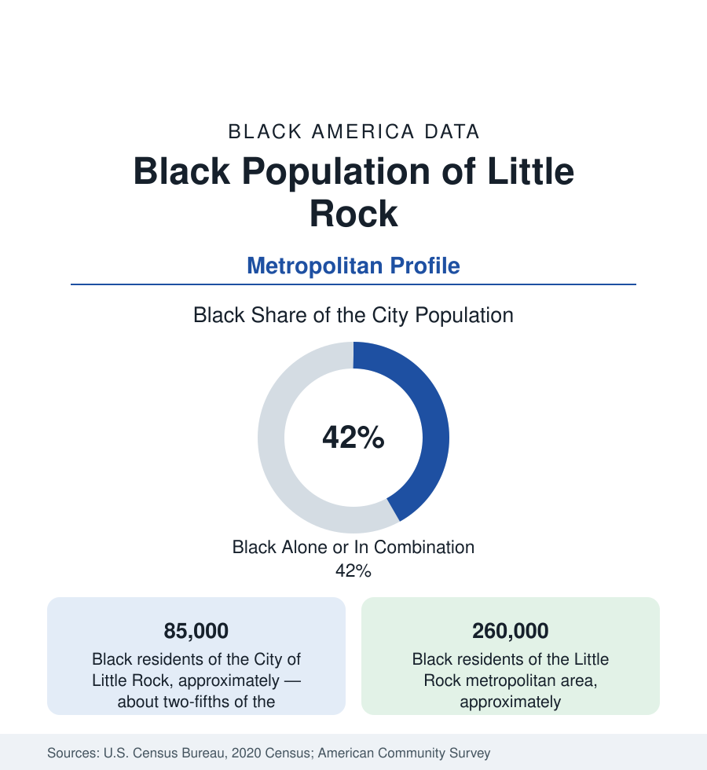

Black Cities
Black Little Rock: Central High's City and the River's Two Shores
Little Rock holds about 85,000 Black residents in the city — two-fifths — and 260,000 across the metro. The census profile.

Little Rock holds about 85,000 Black residents within the city — Black alone or in combination, roughly two-fifths of its 203,000 people — and about 260,000 across the metropolitan area. The city's name is fixed in the national memory by 1957 and Central High School, but its Black community is older and broader than the crisis that made it famous: an HBCU, a state capital's public workforce, and a river geography of two shores that organise the modern data.
Dunbar, Central, and the South Side
Black Little Rock's historic geography runs south of the downtown: the Dunbar district (named for the high school that was the Black system's flagship — Paul Laurence Dunbar High, built in 1929 to a standard its alumni cite against Central's fame, now a magnet middle school), the South Main and Wright Avenue corridors, the Philander Smith University campus (the HBCU founded in 1877, the community's collegiate anchor), and the neighborhoods of the city's south and southwest where the modern mass lives. Central High itself — the 1957 site, now a National Historic Site with a museum across the street and a working magnet school whose enrollment is majority students of color — sits at the district's northern edge. North Little Rock, the separate city across the Arkansas River, holds its own Black community (its Argenta and east districts, Shorter College — the AME HBCU — among its institutions); the river's two shores divide the metro's municipal data while sharing its labor market.
The Capital's Workforce and the Indicators
Little Rock's Black employment runs on the state-capital pattern: state government, the University of Arkansas for Medical Sciences (the state's academic health center and among its largest employers) and the hospital row, the school districts, the port and logistics economy, and Simmons Bank's and the remaining corporate headquarters' layer. The indicators describe a community of two speeds divided by Interstate 630 — the freeway built through the Black districts in the 1960s, the city's canonical clearance wound — north of which the Heights and west Little Rock appreciate (with a small Black professional presence) and south of which the legacy districts record the state's urban floor on income beside a rooted homeownership base. Pulaski County's suburbs (Jacksonville, with its air base; Sherwood; Maumelle, the planned community) and Saline County (Benton, Bryant) hold the suburban growth, Black families prominent in Jacksonville's base-adjacent market.
1957 in the Data's Long Shadow
The Little Rock Nine's year is this profile's historical core, and the reference records its data consequences rather than its drama: the crisis made the city's schools a national instrument, drove the private-academy and white-flight restructuring of Pulaski County education for a generation, and left a district whose modern data (a majority-Black enrollment, a state intervention and return cycle in the past decade, Central's magnet success beside neighborhood schools' struggles) still organize around 1957's decisions. The institutions the community built in response — Philander Smith's civil-rights-era role, the Dunbar alumni's fierce preservation, the Mosaic Templars Cultural Center (the Black fraternal empire's headquarters building, now the state's Black heritage museum) — form the cultural layer, and the heritage economy around Central High draws the visitor data of a small capital with an outsized place in the national curriculum.
Change and the Estimates
The estimates show slow metro growth, Black suburbanization into Jacksonville, Sherwood, and Saline County leading it, the south Little Rock districts losing population to the ring while the southwest quadrant (the city's newest subdivisions) gains Black families — an internal south-side migration the tract data follow street by street. Pine Bluff, forty minutes southeast (profiled in the Arkansas state file — among the most heavily Black small metros in America, Jefferson County's long decline), functions as the metro's sister community, its UAPB anchoring the Delta-edge system the capital serves as hospital and market center.
Reading the Little Rock Numbers
Little Rock is the small-capital profile: 85,000 Black residents in a city the world knows for one school year, building the ordinary institutions — an HBCU, a medical center's workforce, south-side subdivisions — in the long aftermath. Its data argue that a community is not its most famous photograph; the tables, year after year, are the argument's evidence.
More in Black Cities
Black Atlanta: Population, Distribution, and Growth of a Black Metropolis
Metro Atlanta holds more than two million Black residents — roughly one in three, second only to New York. The suburban distribution, migration history, and composition of Black Atlanta in the census data.
Black New York: The Largest Black Population in America
The New York metropolitan area holds about 3.4 million Black residents — more than any metro in the nation — and the city itself about two million. The census profile.
Black Washington: The District and the Metro
The Washington metro holds about 1.6 million Black residents, and the District itself — long a majority-Black city — now records a Black share near 41 percent. The census profile.
Source: U.S. Census Bureau, 2020 Census; American Community Survey; Population Estimates Program.